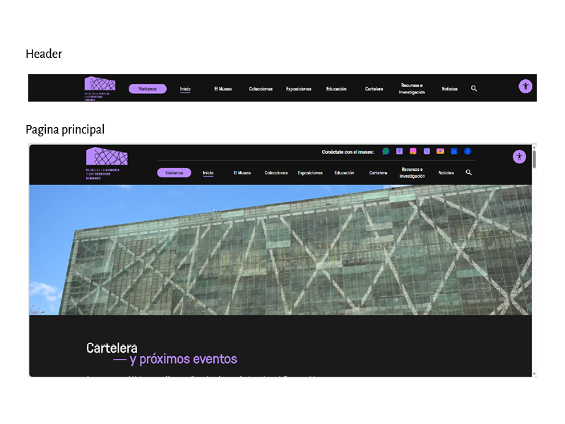
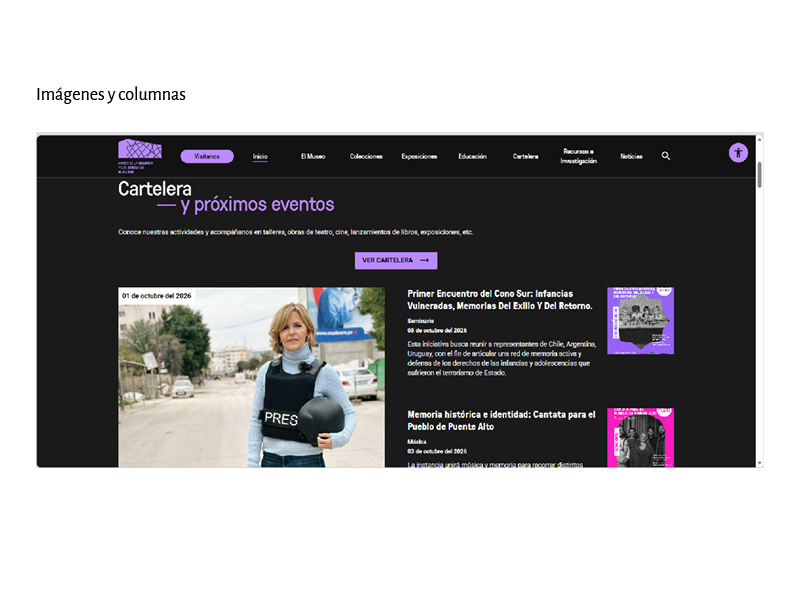
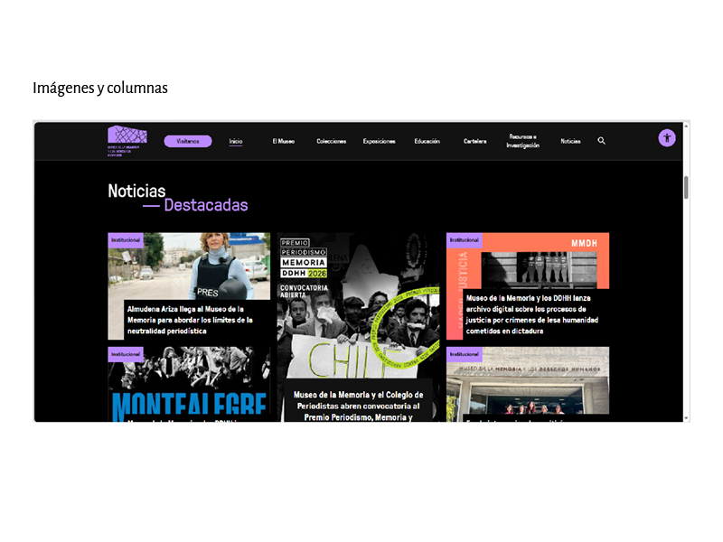
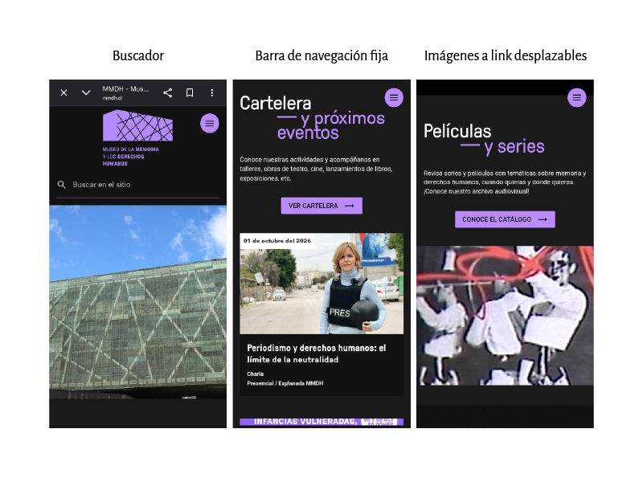

01 / Museo de la Memoria y los Derechos Humanos
VISITAR SITIO ↗¿Qué partes de la pantalla se mueven y cuáles quedan fijas al hacer scroll?
Al realizar scroll, el contenido principal de la página se desplaza verticalmente, permitiendo recorrer las diferentes secciones del sitio. El Header de la página y el menú de accesibilidad es lo único que queda fija.

¿Cómo se distribuyen las columnas?
Para analizar la distribución de las columnas se utilizaron las herramientas de desarrollador del navegador. Se observa cómo se organizan los diferentes contenedores y elementos del sitio jugando también con la distribución de imagenes.

Vista en escritorio
En la versión de escritorio, el sitio utiliza el espacio horizontal disponible para organizar sus contenidos y generar una jerarquía visual entre textos, imágenes y diferentes secciones.

¿Cómo reacciona el layout cuando la pantalla se reduce al tamaño móvil?
Al reducir el ancho de la pantalla, los contenidos se reorganizan para adaptarse al espacio disponible. Las estructuras horizontales pueden pasar a una disposición vertical y los elementos de navegación ocupan menos espacio.

La organización del sitio permite recorrer diferentes contenidos mediante una estructura de secciones. La adaptación a diferentes tamaños de pantalla permite mantener la jerarquía general de la información.
Como posible ajuste, se podría revisar la cantidad de información visible simultáneamente en algunas secciones para facilitar la lectura y navegación en pantallas pequeñas.